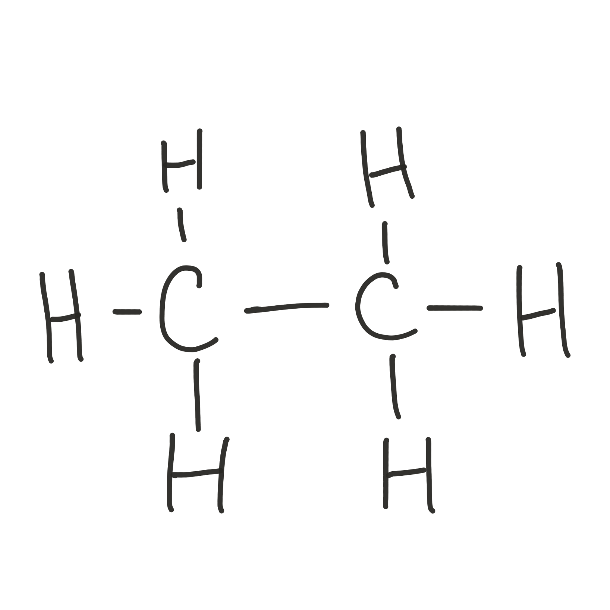

Calculating Empirical Formula
How to work out Empirical Formula from Displayed Formula
Example 1 Ethane

- Count the number of element atoms
2 carbons and 6 hydrogens - List them in the order C, H, N, O
- Put the numbers, after the element symbol and lower
C2H6
This is the molecular formula -
If the number of hydrogens can be divided by the number of carbons (exactly)
Divide through by the number of carbons.
C2/2H6/2 = CH3
- CH3 is the simplest formula that tells you how many carbons there are compared to hydrogens in ethane. This is the Empirical Formula
Example 2 Ethanoic Acid

- Count the number of element atoms
2 carbons, 4 hydrogens, and 2 oxygens - List them in the order C, H, N, O
- Put the numbers, after the element symbol and lower
C2H4O2
This is the molecular formula of ethanoic acid -
If the number of hydrogens can be divided by the number of carbons (exactly)
Divide through by the number of carbons.
C2/2H4/2O2/2 = CH2O
- CH2O is the simplest formula that tells you how many carbons there are compared to hydrogens and oxygens, in ethanoic acid. This is the Empirical Formula of ethanoic acid
Example 3 Ethane-1,2-diol

- Count the number of element atoms
2 carbons, 6 hydrogens, and 2 oxygens - List them in the order C, H, N, O
- Put the numbers, after the element symbol and lower
C2H6O2
This is the molecular formula of ethane-1,2-diol -
If the number of hydrogens and oxygens can be divided by the number of carbons (exactly)
Divide through by the number of carbons.
C2/2H6/2O2/2 = CH3O
- CH3O is the simplest formula that tells you how many carbons there are compared to hydrogens and oxygens, in ethane-1,2-diol. This is the Empirical Formula of ethane-1,2-diol.
Example 4 Butane
The simplification of a molecular formula to an empirical formulaSometimes you can't divide through to reduce any element to 1

- Count the number of element atoms
4 carbons, 10 hydrogens - List them in the order C, H, N, O
- Put the numbers, after the element symbol and lower
C4H10
This is the molecular formula of butane -
If the number of hydrogens and oxygens can be divided by any number (exactly)
Divide through by the largest number possible.
C4/2H10/2 = C2H5 - C2H5 is the simplest formula that tells you how many carbons there are compared to hydrogens in butane. This is the Empirical Formula of butane.